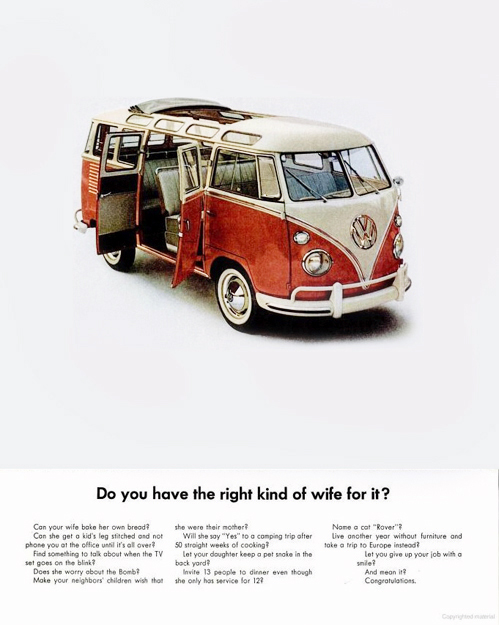

Zeds Dead
Вообще, эти чуваки оказались как-то нереально круты. Вот, например, ремикс на The Rolling Stones, а вот на Radiohead! Очень классно! :)
Вообще, эти чуваки оказались как-то нереально круты. Вот, например, ремикс на The Rolling Stones, а вот на Radiohead! Очень классно! :)
Massive Attack - Paradise Circus (Zeds Dead Remix) by THEBINGOBALLS
Обалденная все-таки штука!

Есть в нем что-то необъяснимо притягательное для меня. А вот тут есть целый сайт с рекламой VW Bus и не только.
Мелкий (2,5) звонит мне по телефону:
— Аллё, папа, мы тут игаем в маcинки!
Звонит, конечно, не сам, ему старший помогает, но удивительно, что он в телефон говорит, слушает меня и отвечает! Совсем большой уже :)
альбом просто отличный :)
The XX - Intro by Joseph Chackal
Не альбомная версия. 5 минут против чуть больше 2 в альбоме.
Какая отличная тема на французском :)
Flying Lotus - Zodiac Shit. Или вот можно в эту штуку Синкансэн-2 загрузить, тоже очень интересно получается :)
Небольшое видео о том, как делали. Жаль, к нам не приедет, обязательно сходил бы!